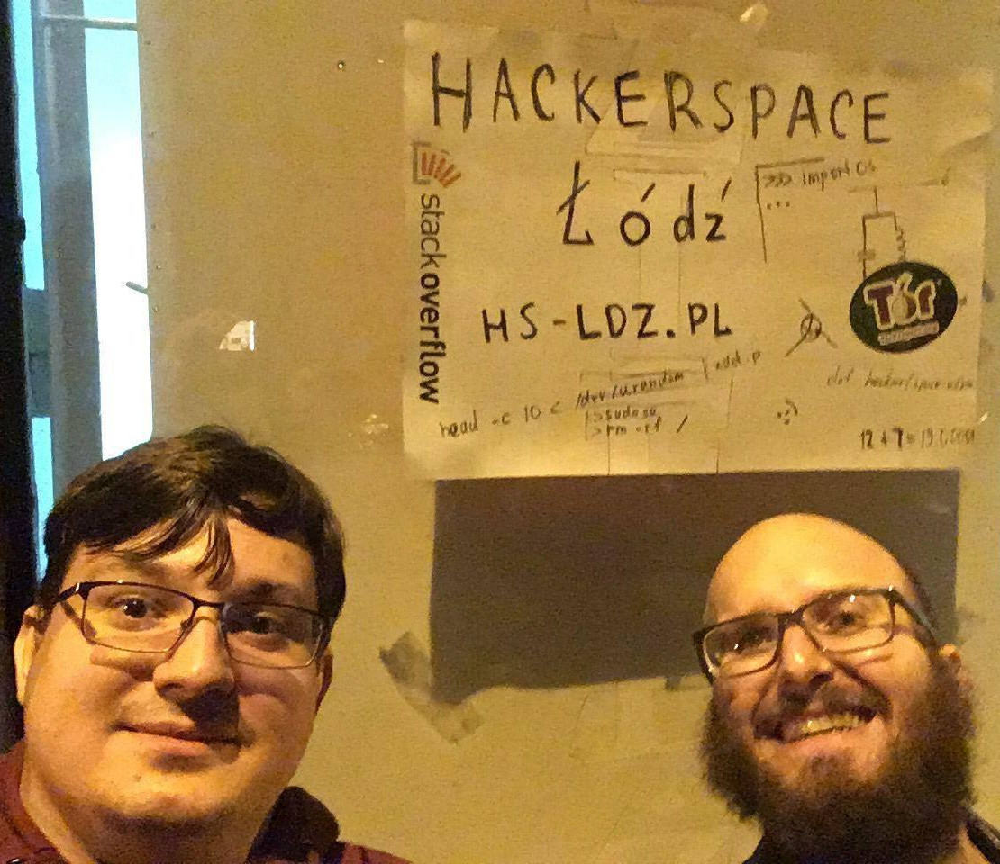

---
# this is an empty front matter
---
{% include header.html lang="pl" %}
{% include dues.txt %}
{% include next_meeting.txt %}
  <main role="main" class="inner cover">
    <h1 class="cover-heading">Budujemy <a href="https://pl.m.wikipedia.org/wiki/Hackerspace">Hackerspace</a> w Łodzi. Szukamy ludzi.</h1>

    <p class="lead">Jesteśmy społecznością pasjonatów open source, DIY, komputerów minionej ery i ruchu wolnej kultury. Organizujemy spotkania, robimy projekty i wymieniamy się wiedzą. <a href="https://github.com/hakierspejs/wiki/wiki"><u><strong>[Więcej info]</strong></u></a></p>

    <div class="alert alert-warning" style="display: none;" id="isitopen">
        🔓🚪❗ Wygląda na to, że Hakierspejs jest właśnie otwarty!

        Wpadnij na <strong>Zieloną 30</strong>
        jeśli jesteś w pobliżu albo odwiedź nasz chat (link
        znajdziesz poniżej) żeby się upewnić, że zdążysz do nas dotrzeć.
        Do zobaczenia!
    </div>
    
    <div class="alert alert-danger">
    📅 <strong>Następne spotkanie:</strong> {% include date.txt time_arg=next_meeting lang="pl" %}{% if next_meeting_location %}Miejsce: {{ next_meeting_location }}. Zaczynamy wcześnie, ale nie ma problemu jeśli dołączysz później :){% endif %}
       {% if next_meeting_location %}{% else %}<br />Spotkanie online.{% endif %} Więcej info na <u><a class="text-danger" href="{{ next_meeting_url }}">meetup.com</a></u>.
    </div>


    <div class="alert alert-success">
        ✌ <strong>Właśnie rejestrujemy stowarzyszenie!</strong> <br/> Aktualny stan podpisów to:
        <div class="progress" style="margin: 5px">
          <div class="progress-bar" role="progressbar" style="width: 12.5%" aria-valuenow="12" aria-valuemin="0"
            aria-valuemax="100">1/8 członków założycieli</div>
        </div>
    
    </div>   

    

    <div class="alert alert-info">
        💉💰 <strong>Zbieramy składki na bieżącą działalność (m.in. czynsz).</strong> <br/> Stan wg {% include date.txt time_arg=site.data.dues.dues_last_updated no_hour=true no_weekday=true end=":" lang="pl" %}</u>
        <div class="progress" style="margin: 5px">
          <div class="progress-bar" role="progressbar" style="width: {{ dues_percent }}%" aria-valuenow="{{ dues_percent }}" aria-valuemin="0"
            aria-valuemax="100">{{ site.data.dues.dues_total_lastmonth | round: 2 }}/{{ site.data.dues.dues_monthly_goal }} PLN</div>
        </div>
        W ciągu ostatnich 30 dni zebraliśmy {{ dues_percent | round }}% miesięcznego celu. Łącznie:
    
        <div class="progress" style="margin: 5px">


          <div class="progress-bar bg-warning" role="progressbar" style="width: {{ dues_reserved_percent }}%" aria-valuenow="{{ dues_reserved_percent }}" aria-valuemin="0" aria-valuemax="100">{{ dues_reserved | round: 2 }}zł zarezerwowane</div>
          <div class="progress-bar bg-success" role="progressbar" style="width: {{ dues_total_unreserved_percent }}%" aria-valuenow="{{ dues_total_unreserved_percent }}" aria-valuemin="0" aria-valuemax="100">{{ dues_total_unreserved | round: 2 }}zł wolne</div>
        </div>
    
        Zalecana składka: 100zł (wpłaciło {{ site.data.dues.dues_num_subscribers }} osób).<br />
        Numer konta: 55 1140 2004 0000 3002 7656 1893 (mBank). <a class="text-primary" href="https://github.com/hakierspejs/wiki/wiki/Finanse#sk%C5%82adki">Więcej info.</a>
    </div>   
    <p class="lead">Żeby do nas dołączyć, wejdź na naszego chata przez jeden z komunikatorów (wszystkie prowadzą do tego samego chata):</p>
    <p class="lead">
      <a href="https://t.me/joinchat/K73_2BVhRxP6nb4I81YIPQ" class="btn btn-lg btn-secondary">💬 Telegram</a>
      <a href="https://webchat.freenode.net/#hakierspejs" class="btn btn-lg btn-secondary" title="#hakierspejs na chat.freenode.net">💬 IRC</a>
      <a href="https://app.element.io/#/room/#hs-ldz:hackerspace.pl" class="btn btn-lg btn-secondary">💬 Matrix</a>
    </p>
    <p class="lead">Możesz też odwiedzić nasze forum oraz listę mailingową, gdzie publikowane są ogłoszenia i odbywają się dyskusje:</p>

      <a href="https://forum.hs-ldz.pl/" class="btn btn-lg btn-secondary">👋 Forum</a>
      
     <span class="dropdown">
      <button type="button" class="btn btn-lg btn-secondary dropdown-toggle" data-toggle="dropdown">
        📧 Ogłoszenia
      </button>
      <div class="dropdown-menu">
        <a class="dropdown-item" href="https://archiwa.hs-ldz.pl">Przeglądaj</a>
        <a class="dropdown-item" href="https://lista.hs-ldz.pl">Zasubskrybuj</a>
      </div>
    </span> 

    <p class="lead">Śmiało, dołącz do dyskusji! Nie krępuj się też zadawać pytania. Aby nie przytłoczył cię nadmiar wiadomości, wycisz nasz kanał i pisz wtedy, kiedy masz na to ochotę lub czas.</p>

<ul class="nav nav-tabs" id="myTab" role="tablist">
  <li class="nav-item"><a class="nav-link active" id="lokalizacja-tab" data-toggle="tab" href="#lokalizacja" role="tab" aria-controls="lokalizacja" aria-selected="true">Lokalizacja</a></li>
  <li class="nav-item"><a class="nav-link" id="zdjecia-tab" data-toggle="tab" href="#zdjecia" role="tab" aria-controls="zdjecia" aria-selected="true">Zdjęcie</a></li>
</ul>
<div class="tab-content" id="myTabContent" style="margin: 1em">
  <div class="tab-pane fade show active" id="lokalizacja" role="tabpanel" aria-labelledby="lokalizacja-tab">

    <p class="lead">Łódzki Hackerspace znajduje się przy ul.&nbsp;Zielonej&nbsp;30:</p>
    {% include map.html %}
    <br/>
    <small>
	    <a href="https://www.openstreetmap.org/?mlat=51.76951&amp;mlon=19.44514#map=19/51.76951/19.44514&amp;layers=N">Zobacz większą mapę</a>
    	    | <a href="geo:51.7695,19.4452?z=15">geo: 51.7695100, 19.4451400</a>
    </small>


  </div>

  <div class="tab-pane fade" id="zdjecia" role="tabpanel" aria-labelledby="zdjecia-tab">
  
  </div>

</div>


  </main>
{% include footer.html %}
